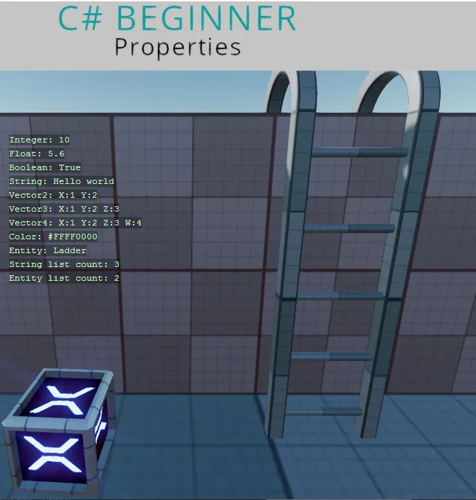
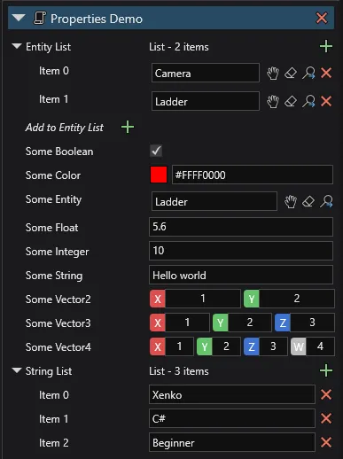

Editor properties
You can find this sample in the tutorial project: Menu → Editor properties
Explanation
This C# Beginner tutorial covers how to expose editor properties for Stride Game Studio.
By creating a public variable at the top of our script, we can create editor properties. Some of the most common properties are demonstrated. We can also create public variables that are not shown in the editor.

Code
using System.Collections.Generic;
using Stride.Core;
using Stride.Core.Annotations;
using Stride.Core.Mathematics;
using Stride.Engine;
namespace CSharpBeginner.Code
{
/// <summary>
/// This script demonstrates the most common properties you can expose to the editor.
/// When we add the public keyword to the variables, they show up as properties in the editor.
/// <para>
/// https://doc.stride3d.net/latest/en/tutorials/csharpbeginner/editor-properties.html
/// </para>
/// </summary>
public class PropertiesDemo : SyncScript
{
// By default public properties are ordered alphabetically
public string SomeString = "Hello Stride";
public int SomeInteger = 10;
// Use DataMember followed by a number to order properties by number
[DataMember(5)]
public bool SomeBoolean = true;
// Instead of using the name of the variable, you can also define your own text
[DataMember(4, "My custom text")]
public float SomeFloat = 5.6f;
// Vectors
public Vector2 SomeVector2; // Is the same as = new Vector2(0, 0);
public Vector3 SomeVector3 = new Vector3(1, 2, 3);
public Vector4 SomeVector4 = new Vector4(5); // All 4 float value get the value of 5
public Color SomeColor = Color.Red;
// Turns a float in to a range slider
// Dragging the slider uses the smallstep value
// Clicking the slider uses the bigstep value
[DataMemberRange(1, 100, 0.1, 1, 3)]
public float RangedFloat = 10.0f;
// Entities and components
public Entity ASingleEntity;
public CameraComponent ASingleCameraComponent;
// If we want a list of objects like strings, entities or specific components,
// we have to initialize the new List<> right away
public List<string> StringList = new List<string>();
public List<Entity> EntityList = new List<Entity>();
public List<CameraComponent> CameraList = new List<CameraComponent>();
// Dictionaries also need to be initialized. The first value needs to be a primitive type like string
public Dictionary<string, int> aSimpleDictionary = new Dictionary<string, int>();
// If we dont want a public property to be visible in the editor we can use '[DataMemberIgnore]'
[DataMemberIgnore]
public string HideMe;
// Enums can be used for dropdowns
public CharacterType Character;
public enum CharacterType
{
Warrior,
Archer,
Mage
}
/// <userdoc>This is a super long description. Use it to help the people that use your components, understand what a propery does.</userdoc>
/// The text above is displayed in game studio when a property is selected and also shows up when you hover over the property
public string Explanation;
public override void Update()
{
var x = 400;
DebugText.Print("Integer: " + SomeInteger, new Int2(x, 200));
DebugText.Print("Float: " + SomeFloat, new Int2(x, 220));
DebugText.Print("Boolean: " + SomeBoolean, new Int2(x, 240));
DebugText.Print("String: " + SomeString, new Int2(x, 260));
DebugText.Print("Vector2: " + SomeVector2, new Int2(x, 280));
DebugText.Print("Vector3: " + SomeVector3, new Int2(x, 300));
DebugText.Print("Vector4: " + SomeVector4, new Int2(x, 320));
DebugText.Print("Color: " + SomeColor, new Int2(x, 340));
DebugText.Print("String list count: " + StringList.Count, new Int2(x, 360));
DebugText.Print("Entity list count: " + EntityList.Count, new Int2(x, 380));
DebugText.Print("Camera list count: " + CameraList.Count, new Int2(x, 400));
}
}
}
The code above will result in the following properties inside Stride game studio.
